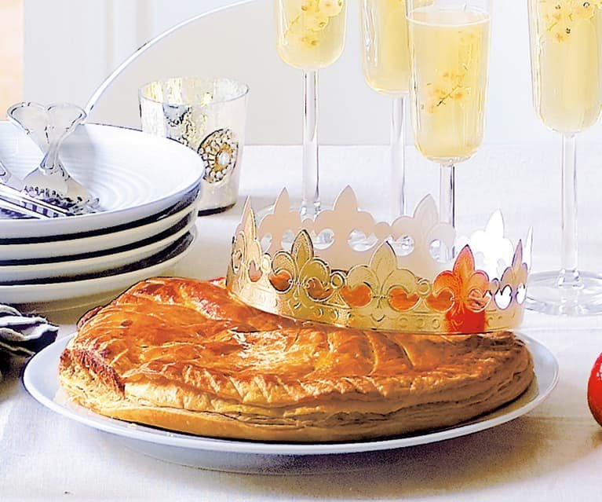

Galette des rois express
Ingrédients
6×
- 125 g de beurre mou
- 125 g de sucre
- 125 g de poudre d'amande
- 2 c. à c. de rhum
- 3 oeufs
- 2 pâtes feuilletées
- 1 jaune d'oeuf
- 2 c. à c. de lait

Préparation
Étape 1
Préchauffer le four à 180ºC. Mettre 125 g de beurre mou et 125 g de sucre dans le bol, mixer 30 sec/vitesse 4.
Étape 2
Ajouter 125 g de poudre d'amande, mixer 20 sec/vitesse 4. Ajouter 2 c. à c. de rhum et 3 oeufs, mixer 30 sec/vitesse 3.
Étape 3
Poser 1 disque de 2 pâtes feuilletées sur une plaque avec du papier cuisson. Étaler la frangipane en laissant 1cm de bord, puis enfoncer la fève, loin du centre.
Étape 4
Battre 1 jaune d'oeuf avec 2 c. à c. de lait. En badigeonner le bord, couvrir du second disque et souder les bords à la fourchette.
Étape 5
Dorer le dessus au jaune d’oeuf, le rayer au couteau, puis cuire 35min environ. Servir tiède.
Résumé
125 g de beurre mou
125 g de sucre
Préchauffer 180ºC mixer 30 sec/vitesse 4
125 g de poudre d'amande
2 c. à c. de rhum
3 oeufs
mixer 20 sec/vitesse 4 mixer 30 sec/vitesse 3
2 pâtes feuilletées
Étaler la frangipane
1 jaune d'oeuf
2 c. à c. de lait
souder
Dorer rayer cuire